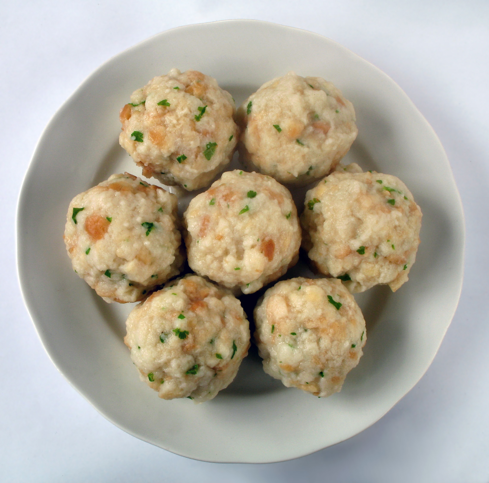

Semmelknödel

Description
A specialty of the Bavaria region of southern Germany, drenched in gravy these famous SemmelKnödel (German Bread Dumplings) are pure heaven! Learn how to make these traditional Knoedel from scratch!
The Semmel Knoedel recipe is pretty standard.
Ingredients
- 750g Semmelbrot/-würfel (oder alte Semmeln).
- 1 Zwiebel
- 2 Knoblauchzehen
- 2-3 EL Butter
- Ca 500ml Milch-Wasser-Gemisch (~50/50).
- 3 EL VK Mehl
- Schnittlauch, Petersilie
- 3 Eier
Steps
- Das Semmelbrot in eine Schüssel geben.
- Mit lauwarmen Milch-Wasser-Gemisch übergießen.
- Ziehen lassen, bis die Semmelwürfel weich sind.
- Überschüssige Flüssigkeit abgießen.
- Zwiebel kleinwürfelig schneiden und in Butter glasig bis golden roesten.
- Zwiebel zum Knebelbrot geben.
- Eier verquirlen, Salz, Pfeffer, Knoblauch, Kräuter und Mehl dazufuegen
- Mischung gutverkneten.
- Den Teig ca 10min rasten lassen.
- Wasser zum kochen bringen.
- Mit nassen Händen fest Knödel formen.
- Knödel in reichlich Salzwasser ziehen lassen (ca 20min)
- Wichtig: Knödel dürfen nicht voll kochen, da sie sonst zerfallen.
- Sobald die Knödel im Wasser sind, Temperatur zurück drehen, so das die Knödel nur noch ziehen.
- Die Knödel sind durch wen sie aufschwimmen (ca 20min)